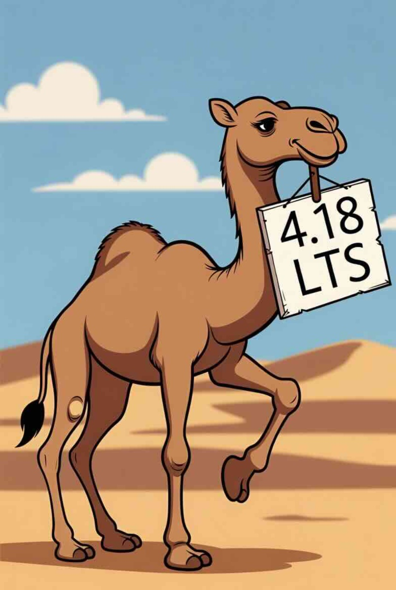

Apache Camel 4.18 LTS has just been released.
This release introduces a set of new features and noticeable improvements that we will cover in this blog post.
Camel Core
Added the possibility to add note(s) to EIPs. This is intended for developer notes or other kind of notes, that is convention to have at the source code. The note has no impaction on the running Camel. Another use case is to build tutorials with half complete code, and have note(s) that describe what to do.
Camel Simple
The simple language has been improved tremendously.
More Functions
We have added 50 more functions to simple language so it now comes with a total of 114.
There are now a lot more functions to work with the data such as String related functions, and also math functions so you can sum totals, find the maximum or minimum value and more.
For example, if you work with JSon data, then there is a new safeQuote function, which will based on the data type quote the value if necessary.
We also made it possible for Camel components and custom components to provide simple functions. For example camel-attachments and camel-base64 has a set of functions out of the box.
Adding your own custom Functions
You can now add custom functions that can be used as first class functions in your simple expressions or predicates.
We added a small example with a custom function stock function, which returns a stock value which can be with Camels simple language with ${stock()} as shown below:
- from:
uri: "timer:stock"
parameters:
period: 5000
steps:
- log: |
Stock prices today
${stock()}
${stock('AAPL')}
${stock('IBM')}
Have a nice day
More Operators
We also added 3 new operators.
Elvis Operator
The Elvis operator ?: is used for returning the current value or a default value. The following will return the username header unless its null or empty, which then the default value of Guest is returned.
simple("${header.username} ?: 'Guest'");
Ternary Operator
We have added the beloved ? : ternary operator so you can do:
simple("${header.foo > 0 ? 'positive' : 'negative'}");
Chain Operator
The new ~> chain operator is fantastic, when you have a new for calling functions from functions. As this makes it much more readable and avoids cluttering when nesting functions inside functions.
simple("${substringAfter('Hello')} ~> ${trim()} ~> ${uppercase()}");
The example above, will first substring the message body, then trim the result, and lastly then uppercase.
Init Blocks
For users that use simple language for data mapping, or when having a larger simple expression, then we have introduced init block.
You can now in the top of your Simple expressions declare an initialization block that are used to define a set of local variables that are pre-computed, and can be used in the following Simple expression. This allows to reuse variables, and also avoid making the simple expression complicated when having inlined functions, and in general make the simple expression easier to maintain and understand.
$init{
$greeting := ${upper('Hello $body}'}
$level := ${header.code > 999 ? 'Gold' : 'Silver'}
}init$
{
"message": "$greeting",
"status": "$level"
}
Here we have an init block which has 2 local variables assigned, that can then easily be reused in the simple expression.
You can also build local custom functions in the init block:
$init{
$cleanUp ~:= ${trim()} ~> ${normalizeWhitespace()} ~> ${uppercase()}
}init$
Notice how the function is defined using ~:= which then allows the function to take in a parameter (message body by default). You can then use that in the simple expression:
{
"message": "$greeting ~> $cleanUp()",
"status": "$level"
}
Better Documentation
The simple documentation has been updated and all the functions and operators has been grouped in different set of tables such as grouped by: numeric functions, string functions, list functions, date functions, etc.
We also added some examples of many of the functions so you have a better understanding what each function can do.
Other Simple Improvements
When using the simple language the returned result can now be trimmed via trimResult: true. You can also pretty print the result (JSon or XML) via pretty: true.
Camel JBang
Every command now has a generated documentation page on the website, that explains what the command do,
and every option supported.
The camel cmd send command can now also send messages to a running infra service (via --infra), such as
$ camel cmd send --body=hello --infra=nats
The camel version list --fresh will store the result to local disk, so when using camel version list then it includes the latest information.
Add new validate plugin that can be installed and then used for validating YAML DSL files without running Camel. The validation is based on the YAML DSL schema specification.
$ camel plugin add validate
$ camel validate yaml foo.camel.yaml
This functionality is also available as a Maven Plugin.
$ mvn camel-yaml-dsl-validator:validate
[INFO] --- camel-yaml-dsl-validator:4.18.0:validate (default-cli) @ camel-example-main-yaml ---
[INFO] Found [.../camel-examples/main-yaml/src/main/resources/routes/my-route.camel.yaml] YAML files ...
[INFO] Validating 1 YAML files ...
[WARNING]
Validation error detected in 1 files
File: my-route.camel.yaml
/0/route/from: property 'step' is not defined in the schema and the schema does not allow additional properties
/0/route/from: required property 'steps' not found
Camel JBang Infra
The camel jbang infra run command now supports a --port option, letting you specify a custom port for your infrastructure services, a long-requested feature that lands in Camel 4.18.0.
$ camel infra run artemis --port 12345
{
"brokerPort" : 12345,
"brokerUrl" : "amqp://localhost:12345",
"host" : "localhost",
"password" : "artemis",
"port" : 12345,
"remoteURI" : "tcp://localhost:12345",
"serviceAddress" : "tcp://localhost:12345",
"userName" : "artemis",
"username" : "artemis"
}
Camel Kafka
Configuring security with camel-kafka has been streamlined to be much easier and similar for all kinds of Kafka security configurations.
Previously, setting up authentication required manually constructing JAAS configuration strings, knowing the correct login module class names, matching securityProtocol with saslMechanism, and handling special character escaping in credentials. This complexity also led to 24 separate Kafka Kamelets in camel-kamelets to cover different authentication combinations.
A new saslAuthType option has been added that supports: PLAIN, SCRAM_SHA_256, SCRAM_SHA_512, SSL, OAUTH, AWS_MSK_IAM, and KERBEROS. When set, the appropriate securityProtocol, saslMechanism, and saslJaasConfig are automatically derived.
For example, configuring SCRAM-SHA-512 authentication is now as simple as:
from("kafka:my-topic?brokers=localhost:9092&saslAuthType=SCRAM_SHA_512&saslUsername=user&saslPassword=pass")
Instead of the previous verbose approach:
from("kafka:my-topic?brokers=localhost:9092&securityProtocol=SASL_SSL&saslMechanism=SCRAM-SHA-512"
+ "&saslJaasConfig=org.apache.kafka.common.security.scram.ScramLoginModule required username=\"user\" password=\"pass\";")
OAuth 2.0 authentication is also supported with dedicated options: oauthClientId, oauthClientSecret, oauthTokenEndpointUri, and oauthScope.
For programmatic use, a new KafkaSecurityConfigurer builder class provides a fluent API with convenient factory methods such as plain(username, password), scramSha512(username, password), oauth(clientId, clientSecret, tokenEndpointUri), and more.
The existing explicit configuration approach with securityProtocol, saslMechanism, and saslJaasConfig continues to work as before – the new simplified options are fully backward compatible.
Camel MINA SFTP
Camel 4.18 introduces camel-mina-sftp, a modern SFTP component designed as a near drop-in replacement for the existing JSch-based camel-sftp component.
Built on top of Apache MINA SSHD, it requires only a URI scheme change from sftp:// to mina-sftp://, all standard configuration options remain the same for supported features, making migration seamless for most use cases.
A standout feature is OpenSSH certificate-based authentication, enabling enterprise-grade key management through Certificate Authority (CA) infrastructure. This MINA-specific capability, not available in the JSch component, provides centralized key revocation, time-limited access without key rotation, and principal-based authorization using standard @cert-authority entries in known_hosts files.
Beyond ease of migration and certificate support, the component delivers enhanced security with modern algorithms (Ed25519, ChaCha20-Poly1305, AES-GCM), built-in compression requiring no additional dependencies, early configuration validation with clear error messages, and strict OpenSSH-compliant known_hosts verification. Currently at Preview support level, camel-mina-sftp provides a robust, future-proof foundation for SFTP integrations.
Migration Example
// Before (JSch-based sftp component)
from("sftp://user@host/path?password=secret")
.to("file:local");
// After (MINA SSHD-based mina-sftp component)
from("mina-sftp://user@host/path?password=secret")
.to("file:local");
OpenSSH Certificate Authentication Example
// Using certificate-based authentication with CA
from("direct:start")
.to("mina-sftp://user@host/path"
+ "?privateKeyFile=/path/to/id_rsa"
+ "&certFile=/path/to/id_rsa-cert.pub");
With @cert-authority entry in known_hosts:
@cert-authority *.example.com ssh-rsa AAAAB3NzaC1yc2E... Enterprise CA
Key Features
- Drop-in replacement: Change URI scheme, keep existing configs
- OpenSSH certificates: Enterprise CA-based authentication and host verification
- Modern cryptography: Ed25519, ChaCha20-Poly1305, AES-GCM support
- Built-in compression: No additional JARs needed (unlike JSch)
- Better error messages: Early validation with clear, actionable errors
- OpenSSH compliance: Strict known_hosts semantics
Camel AI
Camel OpenAI
Camel OpenAI adds new embeddings operation to generate vector embeddings from text for semantic search and RAG applications. Combining it with camel-sql and PostgreSQL + pgvector makes it a powerful setup which you have under control:
- route:
from:
uri: direct:index
steps:
- setVariable:
name: text
simple: "${body}"
- to:
uri: openai:embeddings
parameters:
embeddingModel: nomic-embed-text
- setVariable:
name: embedding
simple: "${body.toString()}"
- to:
uri: sql:INSERT INTO documents (content, embedding) VALUES (:#text, :#embedding::vector)
MCP Server
We introduced the Camel MCP Server, a Model Context Protocol (MCP) server that exposes the Apache Camel Catalog and a set of specialized tools to AI coding assistants such as Claude Code, OpenAI Codex, GitHub Copilot, and JetBrains AI.
The server is built on Quarkus using the quarkus-mcp-server extension and ships as a single uber-JAR that can be launched via JBang. It supports both STDIO (default, for CLI-based AI tools) and HTTP/SSE transports.
The server exposes 16 tools organized into six functional areas:
- Catalog Exploration – Query components, data formats, expression languages, and EIPs with filtering and multi-version support.
- Kamelet Catalog – Browse and get documentation for Kamelets.
- Route Understanding – Extract components and EIPs from a route (YAML, XML, or Java DSL) and return enriched context from the catalog.
- Security Analysis – Analyze routes for security concerns such as hardcoded credentials or plain-text protocols, with risk levels and remediation recommendations.
- Validation and Transformation – Validate endpoint URIs and YAML DSL structure against the catalog schema, and transform routes between YAML and XML formats.
- Version Management – List available Camel versions with release dates, JDK requirements, and LTS status.
Setting it up is straightforward. For example, with Claude Code add the following to your .mcp.json:
{
"mcpServers": {
"camel": {
"command": "jbang",
"args": [
"-Dquarkus.log.level=WARN",
"org.apache.camel:camel-jbang-mcp:4.18.0:runner"
]
}
}
}
This module is in Preview status as of Camel 4.18. For a deeper dive, see the dedicated blog post.
Camel IBM WatsonX AI
A new component that exposes IBM WatsonX AI APIs — including text extraction, content detection, and chat via the official watsonx-ai-java-sdk. Unlike LangChain4j and Spring AI integrations, this component surfaces the full WatsonX API, enabling capabilities that higher-level abstractions don’t expose.
Native IBM COS text extraction pipe documents directly from any Camel source into Watsonx, with results written back to COS automatically:
from("file:/path/to/documents?noop=true")
.to("ibm-watsonx-ai:extract?operation=textExtractionUploadAndFetch" +
"&cosUrl=https://s3.us-south.cloud-object-storage.appdomain.cloud" +
"&documentBucket=input-bucket&resultBucket=output-bucket&...")
.log("Extracted text: ${body}");
Native PII/HAP content detection — inspect messages for sensitive content and branch your route accordingly:
from("direct:detect")
.setBody(constant("Contact John Smith at john.smith@example.com"))
.to("ibm-watsonx-ai:detect?operation=detect&detectPii=true")
.choice()
.when(header("CamelIBMWatsonxAiDetected").isEqualTo(true))
.log("PII detected! Count: ${header.CamelIBMWatsonxAiDetectionCount}")
.otherwise()
.log("No PII detected");
Camel Quarkus
When using camel-main or camel-quarkus then Rest DSL in contract first style is now registering each API endpoints individually with the underlying HTTP server which allows Quarkus to register access control and metrics per endpoint instead of a single combined overall endpoints as previously. This now works the same way as Rest DSL in code first style behaves.
Camel Spring Boot
Separate Management Access Logs
Health check probes hitting actuator endpoints can clutter your access logs when the management and application contexts share a port. You can now suppress access logging for the management context alone by setting management.server.accesslog.enabled=false, this requires a dedicated management.server.port.
server.tomcat.accesslog.enabled=true
management.server.port=9090
management.server.accesslog.enabled=false
Undertow Access Log Provider
Use whatever camel logging mechanism to manage undertow HTTP access log instead of undertow’s own log provider, as it doesn’t use a logging manager. It can be set for both management and non-management endpoints:
Enable camel logging mechanism to manage undertow access log:
# disable the Undertow's own access log handler.
server.undertow.accesslog.enabled=false
# enable camel logging provider
camel.component.platform-http.server.undertow.accesslog.use-camel-logging=true
# sets a log pattern (optional)
server.undertow.accesslog.pattern="%r" %s (%D ms)
Enable camel logging mechanism to manage undertow management access log:
management.server.undertow.accesslog.use-camel-logging=true
# sets a log pattern (optional)
management.server.accesslog.pattern=combined
JDK25 compatibility
Several compatibility issues with JDK 25 have been fixed and documented:
camel-fop— Addnet.sf.saxon:Saxon-HEto your classpath to work around a re-entrant XML parsing bug (FOP-3275).camel-parquet-avro— Disabled on JDK 22+ due to a Hadoop incompatibility (HADOOP-19486).camel-atmosphere-websocket— Upgraded to Atmosphere 3.1.0 to restore streaming support on JDK 25.
Miscellaneous
Upgraded many third-party dependencies to the latest releases at the time of release.
The camel-mock component can now assert JSon where the ordering of the elements does not matter.
The camel-zipfile now avoids loading the entire zip content into memory when used with Split EIP.
When testing routes that has been advice with then the route coverage tool now handles this as well.
The camel-file when writing files and checksum has been enabled, then the checksum is now also stored as a message header that allow to have this information directly in Camel.
When using Camel Spring Boot you can now also for development purposes turn on camel.ssl.trustAllCertificates = true to accept all SSL certificates. Do not use in production!
The camel-aws-s3 when uploading files to AWS S3 is now supporting directly streaming from file sources.
New Components
We have some new components to this release.
camel-aws-security-hub- Manage and interact with AWS Security Hub for security findings.camel-aws2-comprehend- Perform natural language processing using AWS Comprehend and AWS SDK version 2.x.camel-aws2-polly- Synthesize speech using AWS Polly and AWS SDK version 2.x.camel-azure-functions- Invoke and manage Azure Functions.camel-github2- Interact with the GitHub API.camel-google-firestore- Store and retrieve data from Google Cloud Firestore NoSQL database.camel-ocsf- Marshal and unmarshal OCSF (Open Cybersecurity Schema Framework) security events to/from JSON.camel-ibm-watsonx-ai- Interact with IBM watsonx.ai foundation models for text generation, chat, camel-embeddings, and more.camel-mina-sftp- Upload and download files to/from SFTP servers using Apache MINA SSHD.
Upgrading
Make sure to read the upgrade guide if you are upgrading from a previous Camel version.
If you are upgrading from, for example, 4.4 to 4.8, then make sure to follow the upgrade guides for each release in-between, i.e. 4.4 -> 4.5, 4.5 -> 4.6, and so forth.
The Camel Upgrade Recipes tool can also be used to automate upgrading. See more at: https://github.com/apache/camel-upgrade-recipes
Release Notes
You can find additional information about this release in the list of resolved JIRA tickets:
Roadmap
The next 4.19 release is planned in April.
The goal of that release is to migrate to Spring Boot v4, however all together there will be related work to be done in upcoming release to get all of this aligned.